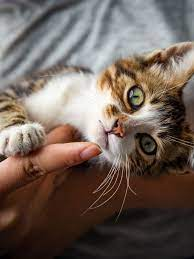

Gatinhos
São bonitinhos
Como montar enxoval para gato, você vai precisar de: -coleira -ração e petiscos -comedouro, bebedouro ou fonte de água -caixa de areia -escova -arranhadores -caixa de transporte
Gatinhos com heterocromia
É uma caracteristica rara
Também conhecido como “gato de olho ímpar”, o fenômeno da heterocromia é uma alteração na coloração da íris - pode ocorrer nos dois olhos ou somente em um. Existem tipos diferentes de heterocromia em gatos, como explica a veterinária Amanda: “pode ser completa (cada olho possui uma cor diferente), parcial (duas cores diferentes no mesmo olho), ou central (um “anel” de cor diferente circunda a pupila)”. Essa condição é, na maioria dos casos, congênita, de caráter hereditário, e não deve causar nenhum espanto ou preocupação ao tutor, já que o gatinho não sente nenhum desconforto ou incômodo.